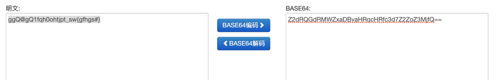
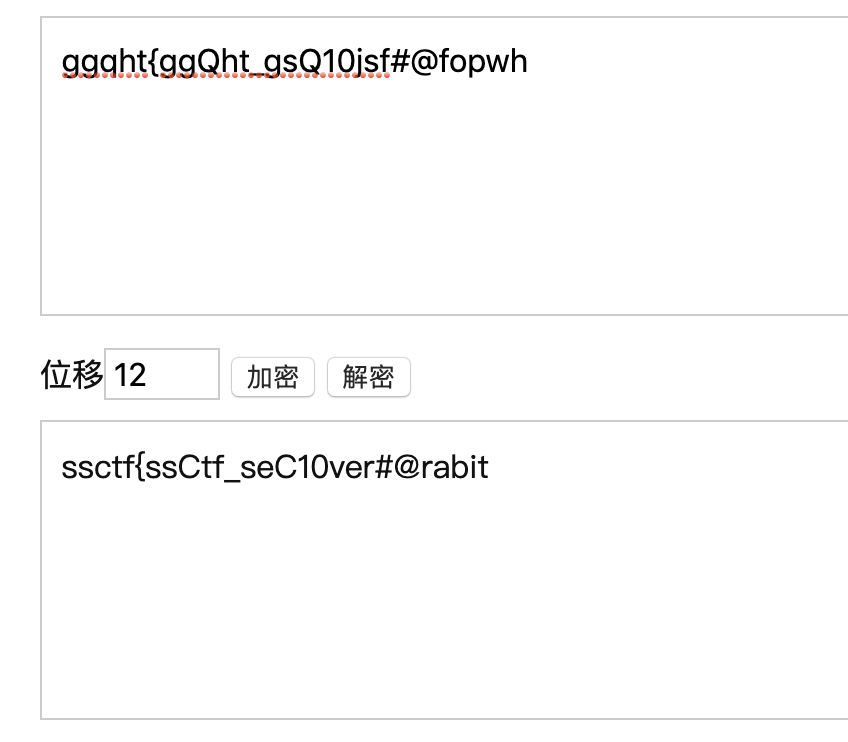

SSCTF-签到
1 | （Z2dRQGdRMWZxaDBvaHRqcHRfc3d7Z2ZoZ3MjfQ==） |
==是bash64加密的特征 进行bash64解密:

得出了bash64解密后的明文 但是这里奇怪的是题目中提示我们要以ssctf{xxxx}为格式去输入flag 然而这里{xxxx}中的数据太少 前面的数据太多 猜测是栅栏加密:
1 | ggQ@gQ1fqh0ohtjpt_sw{gfhgs#} |
一共有28个字符 所以可能是47或者142加密方式 142 想到142后的明文很极端 所以采用4*7:
得出栅栏解密后的明文:
1 | (ggqht{g gQht_gs Q10jsf# @fopwh}) ———— (ggqht{ggQht_gsQ10jsf#@fopwh}) |
这看起来就很对 只不过这还不是我们要的明文 所以可能还有一种以上的加密方式 这里注意到gg开头 所以猜测是凯撒加密:
g——s 有12个字符位
所以猜测加密为:ek(x) = (x + 12) mod 26 则解密为:dk(y) = (y - 12) mod 26
代入得出flag:

1 | ssctf{ssCtf_seC10ver#@rabit} |